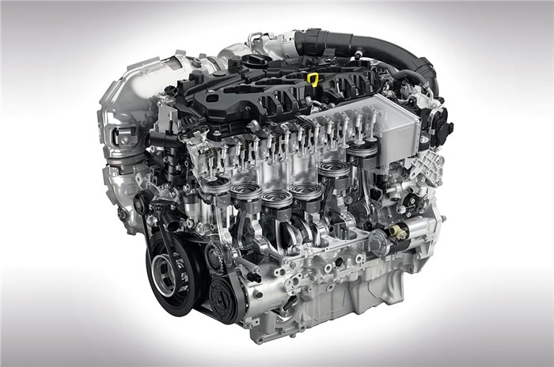
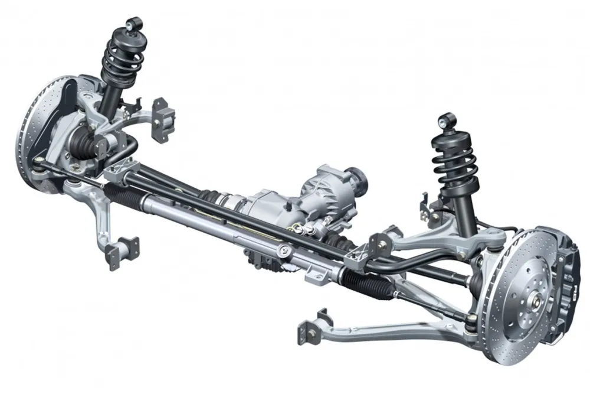
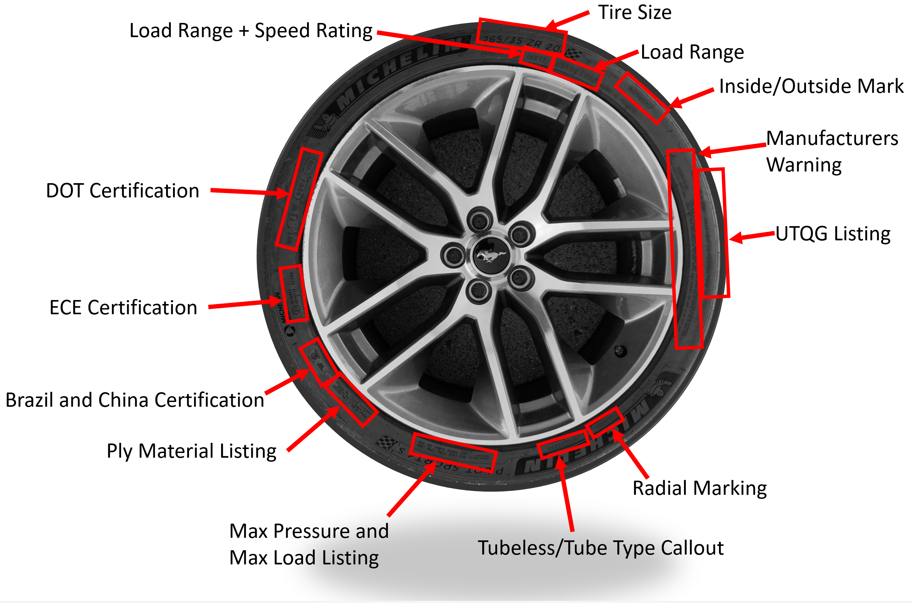
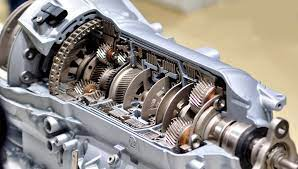

An Engine is a device that converts fuel energy into mechanical energy, which generates motion. The most common fuels used by engines are gasoline and diesel, but other types of fuel include natural gas and biofuels.
The most common type of engine used in vehicles, boats, ships, airplanes, and trains is the internal combustion engine (ICE). In an ICE, the fuel is ignited and combusted within the engine, and the expanding gases move pistons in the engine.
A car Suspension system is a set of components that connect a vehicle's wheels to the rest of the car. Its sole purpose is keeping the car stable by absorbing all external forces exerted on the wheels due to undulations on the road, potholes, speed breakers, or other obstacles.
You should not drive a car with broken suspension. A damaged or collapsed spring can cause sagging, which can cause more damage to your vehicle over time.
A Tire or Tyre is a ring-shaped component that surrounds a wheel's rim to transfer a vehicle's load from the axle through the wheel to the ground and to provide traction on the surface over which the wheel travels.
Tires also absorb road irregularities and limit the transmission of road vibrations to the vehicle body. They also protect the wheels and ensure the vehicle has enough traction so the driver can easily control it.
A Gearbox, also known as transmission, is a mechanical component that helps to transfer power from the engine to the wheels by using different gear ratios. It is usually located between the engine and the wheels, consisting of several gears, shafts and bearings.
The gearbox's purpose is to increase or decrease speed. The gearbox allows a person to apply power to a vehicle in a controlled manner. Without it, the car would not move efficiently.
